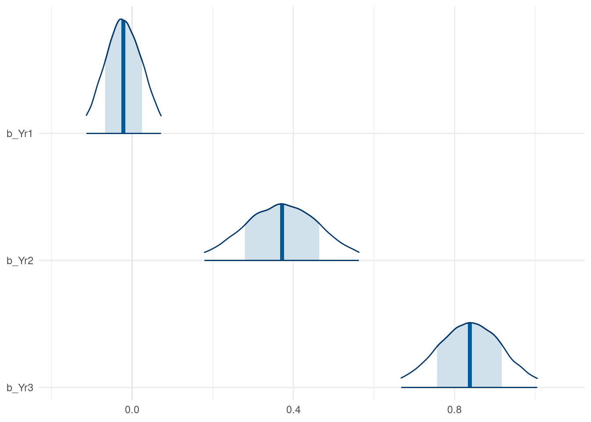
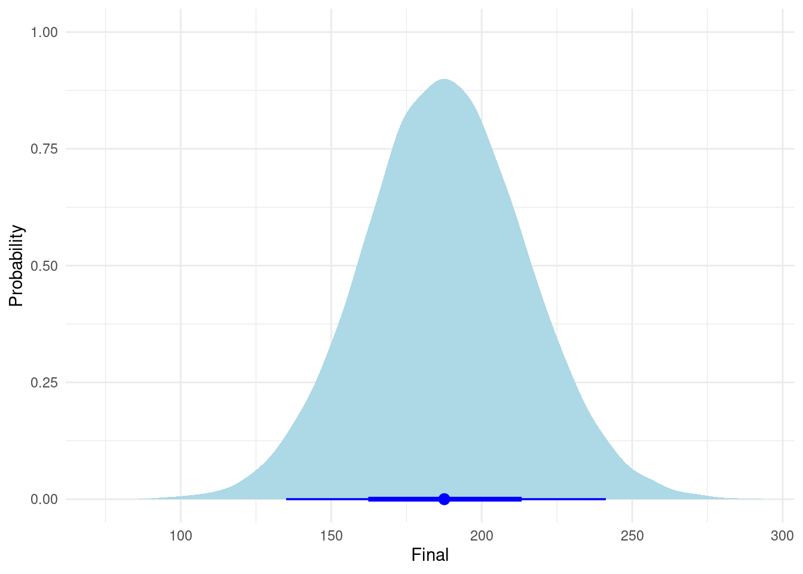
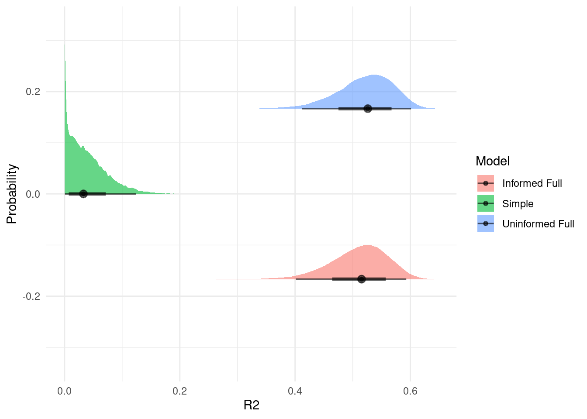
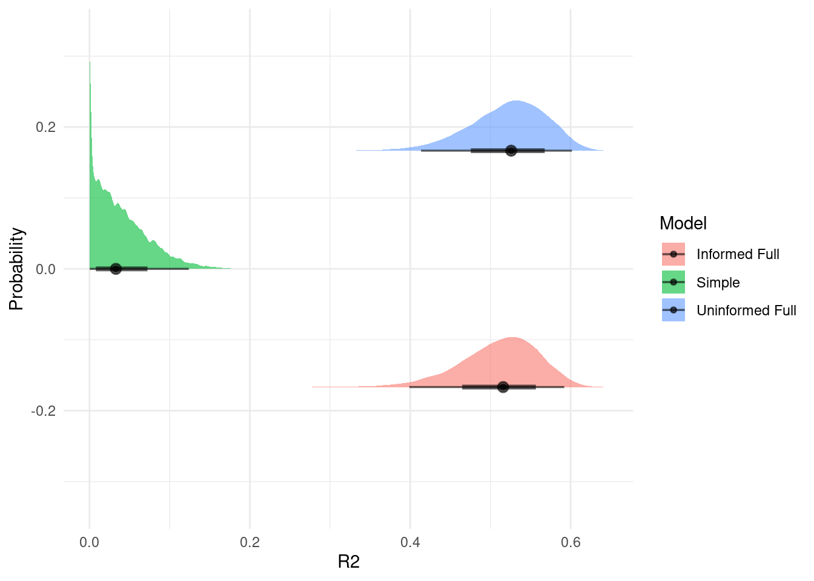
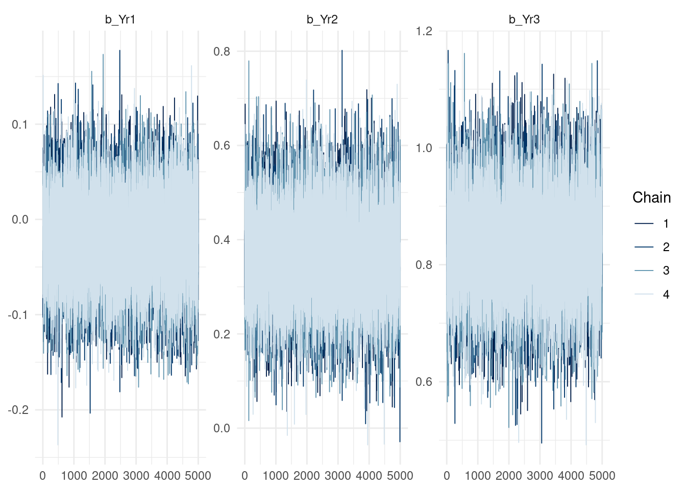
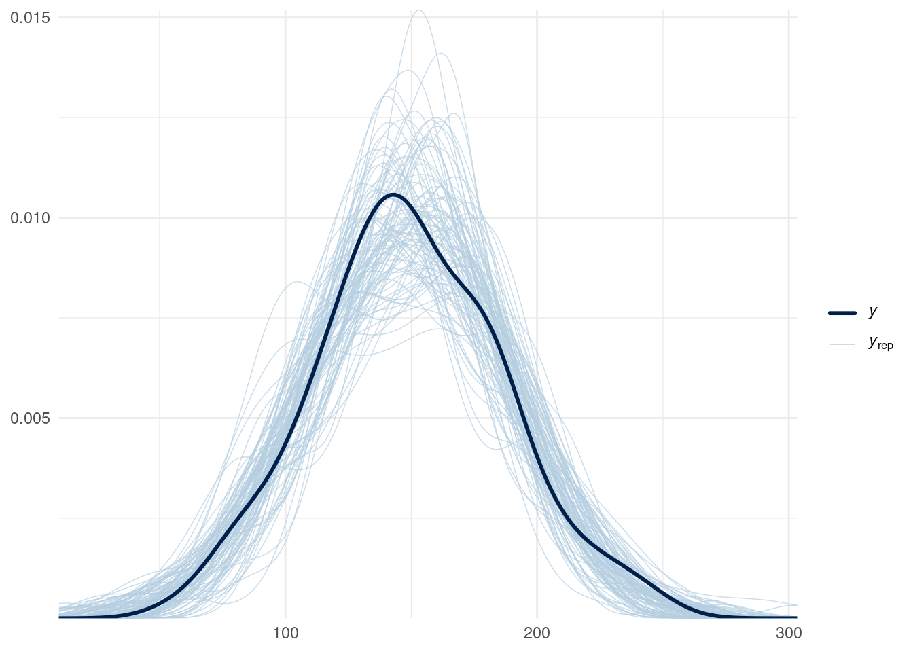
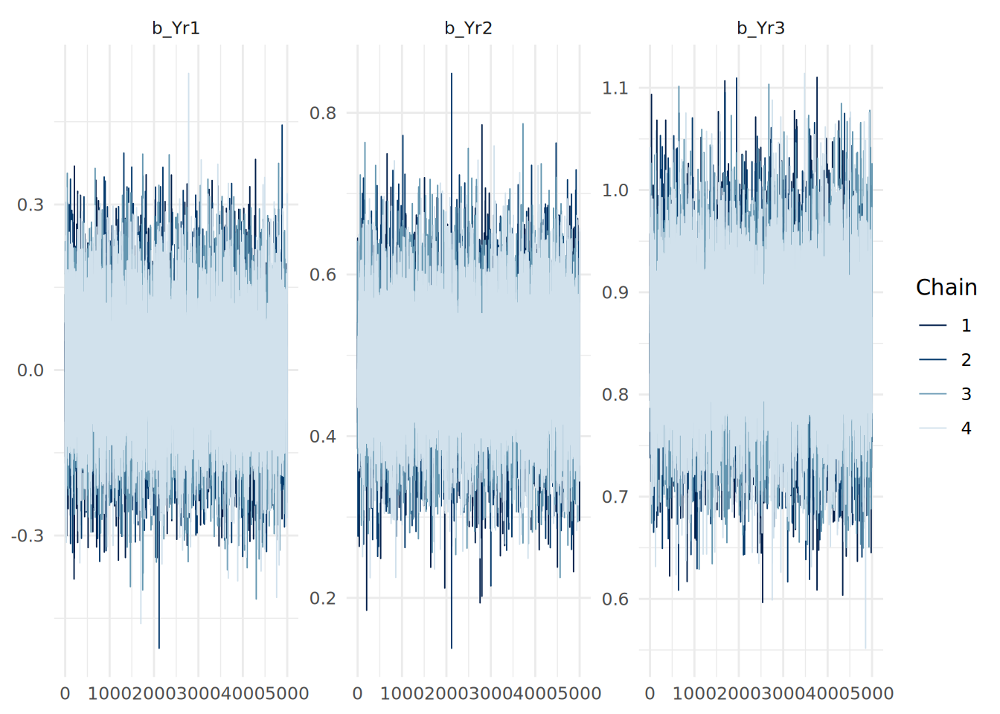
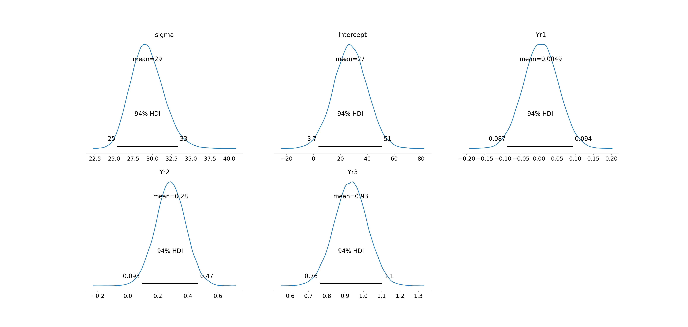
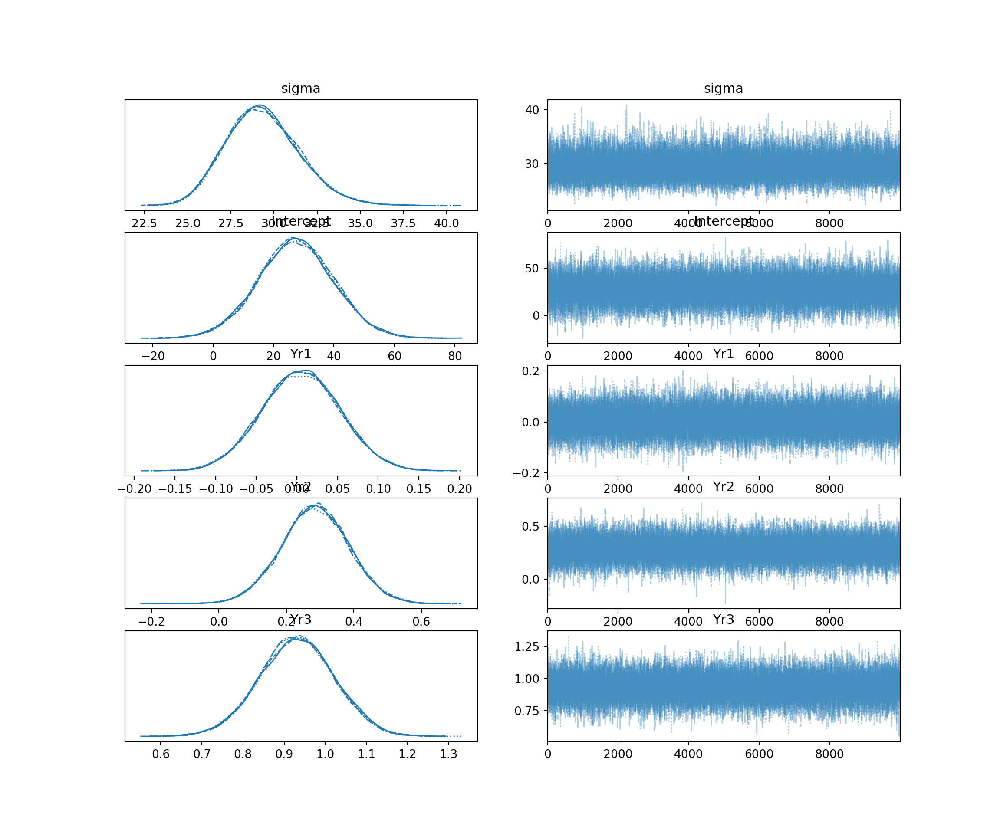
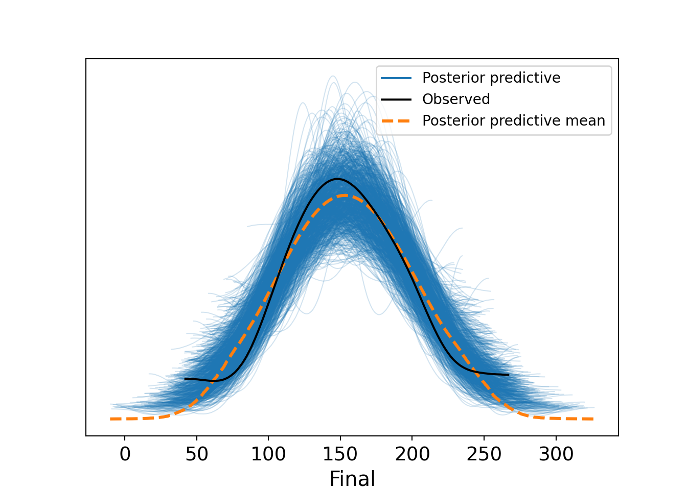

# Load necessary packages
library(brms)
library(bayesplot)
library(ggplot2)
# if needed, download ugtests data
url <- "https://peopleanalytics-regression-book.org/data/ugtests.csv"
ugtests <- read.csv(url)
# take a random sample of 100 rows
set.seed(123)
sample_1 <- sample(nrow(ugtests), 100)
ugtests_bayes <- ugtests[sample_1, ]13 Linear Regression Using Bayesian Inference
In the previous chapter, we introduced the fundamental philosophy of Bayesian inference. We learned to view population parameters not as fixed, unknown constants to be estimated, but as random variables described by probability distributions. We explored how to combine prior beliefs with observed data to form posterior beliefs, and we applied this logic to basic hypothesis testing.
In this chapter, we will revisit Linear Regression, but this time through the lens of Bayesian inference. We will learn how to specify, fit, and interpret Bayesian linear regression models, as well as perform certain diagnostics specific to Bayesian estimation methods. As with classical linear regression, much of what we learn in this chapter will generalize to other types of Bayesian regression models, such as Bayesian logistic regression and Bayesian Poisson regression, which we will cover in the next chapter.
While classical Ordinary Least Squares (OLS) regression—which we covered extensively in Chapter 4—remains a powerful tool, Bayesian linear regression offers distinct advantages which are precisely the advantages offered by Bayesian inference more generally. It allows us to incorporate prior knowledge, it functions well even with smaller sample sizes, and perhaps most importantly, it provides a rich, probabilistic interpretation of our model coefficients and predictions. On the other hand, Bayesian regression models can be computationally intensive and require careful consideration of priors and convergence diagnostics.
To implement Bayesian regression models in R, we will use the brms package. This package serves as an accessible interface to stan, a state-of-the-art platform for statistical modeling and high-performance statistical computation based on Markov Chain Monte Carlo (MCMC) methods. The beauty of brms is that it allows us to fit Bayesian models using syntax that is almost identical to the classic lm() and glm() functions we already know.
13.1 Applying Bayes’ Theorem to Linear Regression
Recall from Chapter 4 that the purpose of linear regression is to explain or predict an outcome measured on a continuous scale using one or more input variables. The assumption is that each observation \(y_i\) of the outcome variable \(y\) is generated by a linear combination of the corresponding observations of the input variables \(x_{i1}, x_{i2}, \dots, x_{ik}\) plus some normally distributed error term:
\[y_i = \beta_0 + \beta_1 x_{i1} + \dots + \beta_k x_{ik} + \epsilon_i\]
where
- \(\beta_0\) is the intercept coefficient
- \(\beta_1, \beta_2, \dots, \beta_k\) are the ‘slope’ coefficients for each input variable
- \(\epsilon_i\) is the error term for observation \(i\), assumed to be normally distributed with mean 0 and variance \(\sigma^2\), that is \(\epsilon_i \sim N(0, \sigma^2)\).
In the classical (frequentist) framework, our goal is to find the point estimates for the \(\beta\) coefficients that minimize the sum of squared errors. We assume there is one true line that best fits the data, and we calculate standard errors to construct confidence intervals around that line.
In the Bayesian framework, we conceptualize the problem differently. We assume that each observation \(y_i\) of the outcome variable comes from a normal distribution characterized by a mean \(\mu_i\) and a standard deviation \(\sigma\):
\[y_i \sim N(\mu_i, \sigma)\]
where the mean \(\mu_i\) is still modeled as a linear combination of the input variable observations:
\[\mu_i = \beta_0 + \beta_1 x_{i1} + \dots + \beta_k x_{ik}\]
The crucial difference is that \(\beta_0, \beta_1, \dots, \beta_k\) and \(\sigma\) are not fixed values we are trying to hunt down. They are random variables with their own distributions. Our goal is to learn the Posterior distribution of each these parameters given our data and any prior beliefs we may have about them. If we use \(\beta\) to represent the vector of all regression coefficients, and noting that our data consists of the outcome variable vector \(y\) and the matrix of input variables \(X\), what we are looking for is the posterior distribution \(P(\beta, \sigma \mid y, X)\). In this context, Bayes’ Theorem can be restated as:
\[ P(\beta, \sigma \mid y, X) \propto P(y \mid X, \beta, \sigma)P(\beta, \sigma) \]
This means that the output of a Bayesian regression model is not a single line or hyperplane that best fits the data, but a probability distribution of all possible lines or hyperplanes that are consistent with our data and our priors. We are simulating posteriors for multiple parameters, and as you can imagine, this will need some computational horsepower.
Calculating the posterior distribution for complex models with multiple parameters is not possible using simple algebraic methods. To solve this, we will need to employ Markov Chain Monte Carlo (MCMC) simulation. MCMC is a class of algorithms used to sample from complex probability distributions. MCMC algorithms work by constructing Markov Chains, which aee sequences of random steps whose long-run behavior mimics the target distribution. A Markov Chain starts from an initial point in the parameter space, and then proposes moves to new points, accepting or rejecting them according to rules that ensure the chain will eventually sample in proportion to the desired distribution. Over many iterations, the collected samples approximate the underlying distribution, enabling estimation of quantities like means, variances, and credible intervals even in high-dimensional problems.
13.2 Running a Bayesian linear regression model
We will use a random subset of the ugtests dataset from Chapter 4, which contains information about undergraduate students’ scores over four years of their Biology degree program. Our goal is to predict the Final year score based on the Yr1,Yr2 and Yr3 scores using Bayesian linear regression. Initially, we will assume that this subset is all the data we have available for our model. As we will be running a lot of random sampling and simulations in this chapter, we will be setting random seeds throughout to ensure the calculations are reproducible.
13.2.1 Specifying the Model
In brms, we use brm() with the family = gaussian() argument to fit a Bayesian linear regression model. The syntax is very similar to lm() and glm() from our previous chapters, but with a few extra arguments regarding the Bayesian specifics. If brm() is not given any priors, it will use a set of default priors which assume we have no ingoing beliefs about any of our parameters.
Let’s first fit a multiple linear regression model accepting the default priors. You may find that the MCMC simulations in brms models take some time to run, depending on the processing power and memory you have available as well as the choices you make about the scale of your simulation.
# Fit an uninformed Bayesian linear regression Model
uninf_model <- brm(
formula = Final ~ Yr1 + Yr2 + Yr3,
data = ugtests_bayes,
family = gaussian(), # Indicates linear regression (gaussian/normal distribution)
chains = 4, # Number of independent MCMC chains
iter = 10000, # Number of steps in each MCMC chain
refresh = 0, # Suppress progress output (optional)
silent = 1, # Reduce console output (optional)
save_pars = save_pars('all'), # save all parameters for later use (optional)
seed = 123 # set seed for reproducibility
)Let’s review the various arguments we passed to brm():
formula&data: This is the same as we use inlm().family = gaussian(): This tellsstanthat we are doing linear regression (assuming errors are normally distributed).chains: We run 4 independent MCMC simulations to ensure they all converge to the same answer.iter: How many steps the simulation takes. The first 50% or so are usually discarded as “warm-up” iterations to learn the shape of the posterior, and the second half are kept for analysis. The more complex the model, the more iterations are usually needed to ensure convergence.refresh: Controls how often the MCMC simulation progress is printed to the console. Setting to 0 suppresses this output.silent: Reduces status output so that only the most critical messages appear.save_pars: Saves all parameters from the model locally for later use.seed: Sets the random seed for reproducibility of results.
If we want to see the priors used by a brms model, we just need to use the get_prior() function:
# Check the priors used in the model
get_prior(uninf_model) prior class coef group resp dpar nlpar lb ub tag
(flat) b
(flat) b Yr1
(flat) b Yr2
(flat) b Yr3
student_t(3, 146.5, 36.3) Intercept
student_t(3, 0, 36.3) sigma 0
source
default
(vectorized)
(vectorized)
(vectorized)
default
defaultThis output means that the following priors have been used in our initial model:
- Intercept Coefficient: A Student-\(t\) distribution with 3 degrees of freedom, and with the mean and scale automatically determined based on the data.
- ‘Slope’ Coefficients (
b): A Uniform distribution across all real numbers, each with equal probability. This is effectively the “flat” prior, indicating no ingoing knowledge about the coefficients. - Residual standard deviation (
sigma): A Student-\(t\) distribution with 3 degrees of freedom, and with the scale automatically determined based on the data. Note that thelbcolumn for this prior contains zero. Thelbandubcolumns set lower and upper bounds for the prior. Therefore in this case we actually have a half-distribution with a lower bound of zero to reflect that fact thatsigmamust be positive.
13.2.2 Interpreting the Results
Once the model is fit, we can examine the results. Unlike lm(), which gives us t-statistics and p-values, brm() gives us summaries of the posterior distribution.
# View summary of the model
summary(uninf_model) Family: gaussian
Links: mu = identity
Formula: Final ~ Yr1 + Yr2 + Yr3
Data: ugtests_bayes (Number of observations: 100)
Draws: 4 chains, each with iter = 10000; warmup = 5000; thin = 1;
total post-warmup draws = 20000
Regression Coefficients:
Estimate Est.Error l-95% CI u-95% CI Rhat Bulk_ESS Tail_ESS
Intercept 40.33 16.55 7.72 72.83 1.00 24573 15080
Yr1 -0.27 0.17 -0.60 0.07 1.00 24176 14924
Yr2 0.36 0.10 0.17 0.55 1.00 24735 15626
Yr3 0.85 0.09 0.68 1.02 1.00 25017 15802
Further Distributional Parameters:
Estimate Est.Error l-95% CI u-95% CI Rhat Bulk_ESS Tail_ESS
sigma 26.38 1.92 22.96 30.46 1.00 23058 15437
Draws were sampled using sample(hmc). For each parameter, Bulk_ESS
and Tail_ESS are effective sample size measures, and Rhat is the potential
scale reduction factor on split chains (at convergence, Rhat = 1).We can understand the basic summary output of estimates in a very similar way to OLS regression:
The
Estimatecolumn provides the medians of the posterior distributions for each parameter. In this case:Intercept: This is the posterior mean of the final year score assuming there was a score of zero in all of the previous years.Yr1: This is the posterior mean change in Final year score associated with a one point increase in Year 1 score, assuming no change in the other input variables.Yr2: This is the posterior mean change in Final year score associated with a one point increase in Year 2 score, assuming no change in the other input variables.Yr3: This is the posterior mean change in Final year score associated with a one point increase in Year 3 score, assuming no change in the other input variables.sigma: This is the posterior mean of the standard deviation of the residuals (the ‘noise’ in the data not explained by the model).
The
Est.Errorcolumn is the standard deviation of the posterior distributions. It represents the uncertainty of our estimates.The
l-95% CIandu-95% CIcolumns provide lower and upper bounds of the 95% credible intervals for the parameters. To display a different credible interval you can use theprobargument in the summary command (e.g.,prob = 0.8for an 80% credible interval).The remaining columns provide information about the MCMC simulation. In particular:
Rhat: The potential scale reduction factor. Values close to 1 indicate good convergence of the chains. Values significantly greater than 1 suggest that the chains have not converged well.Bulk_ESSandTail_ESS: The effective sample sizes. These indicate how many independent samples the MCMC simulation effectively produced in the ‘bulk’ (5-95% quantiles) of the distribution and in the tails (outside the 5-95% quantiles) . Higher values are better, with at least 1000 considered minimally sufficient. This ensures that there are sufficient samples representing random variables that are independent and identically distributed (iid).
13.2.3 Specifying informative priors
Although the default priors are generally fit for purpose in the brm() function, there are times when we may have strong prior knowledge that may cause us to adjust one or more of our priors. Imagine you are given the following information by expert faculty in the Biology department.
- No scores are known to be negatively associated with final year scores.
- Year 1 scores are typically very weakly associated with final year scores or sometimes not at all associated.
- Year 2 and Year 3 scores are typically progressively more positively associated with final year scores.
This suggests that we could propose an informative prior for our Year 1 coefficient in our model. We can do this using the prior() function in brms. Let’s specify a normal prior for the Yr1 coefficient centered around 0 to reflect our belief that it has a weak or null effect on Final year scores. Let’s also specify a very narrow standard deviation to indicate a strong belief.
To assign a prior to a specific parameter in the prior() function, we use the class and coef arguments. The class argument indicates the type of parameter (b for slope coefficients, Intercept for the intercept, sigma for the residual standard deviation), while the coef argument specifies which b variable the prior applies to. For any parameters not explicitly assigned a prior, brms will use the default priors.
# Define informative priors on the Yr1 coefficient
priors <- c(
prior(normal(0, 0.05), class = b, coef = Yr1)
# use lb and ub arguments to set bounds if needed
)
# run an informed model with this prior
inf_model <- brm(
formula = Final ~ Yr1 + Yr2 + Yr3,
data = ugtests_bayes,
family = gaussian(),
prior = priors,
chains = 4,
iter = 10000,
refresh = 0,
silent = 1,
save_pars = save_pars('all'),
seed = 123
)Let’s view our informed model summary:
# View summary of the informed prior model
summary(inf_model) Family: gaussian
Links: mu = identity
Formula: Final ~ Yr1 + Yr2 + Yr3
Data: ugtests_bayes (Number of observations: 100)
Draws: 4 chains, each with iter = 10000; warmup = 5000; thin = 1;
total post-warmup draws = 20000
Regression Coefficients:
Estimate Est.Error l-95% CI u-95% CI Rhat Bulk_ESS Tail_ESS
Intercept 27.73 14.27 -0.63 55.64 1.00 22843 14356
Yr1 -0.02 0.05 -0.11 0.07 1.00 26315 16010
Yr2 0.37 0.10 0.18 0.56 1.00 24118 15612
Yr3 0.84 0.09 0.67 1.01 1.00 23879 15604
Further Distributional Parameters:
Estimate Est.Error l-95% CI u-95% CI Rhat Bulk_ESS Tail_ESS
sigma 26.55 1.93 23.12 30.65 1.00 23370 16175
Draws were sampled using sample(hmc). For each parameter, Bulk_ESS
and Tail_ESS are effective sample size measures, and Rhat is the potential
scale reduction factor on split chains (at convergence, Rhat = 1).We now see that our posterior estimates have shifted based on our prior beliefs. The Yr1 coefficient is now closer to zero, better reflecting our belief that it has a weak to null effect on the Final year score. Note that, although this new model has coefficients that are more aligned with our prior beliefs, this does not necessarily mean it will perform better than our uninformed model.
13.3 Examining posteriors
13.3.1 Visualizing Posterior Parameter Distributions
Visualization is a particularly important communication tool in Bayesian statistics, because we are communicating uncertainty about our parameters. We can plot the distributions of plausible values for our informed model coefficients using the mcmc_areas() function from the bayesplot package.
# Plot posterior distributions for coefficients
library(bayesplot)
mcmc_areas(
inf_model,
pars = c("b_Yr1", "b_Yr2", "b_Yr3"),
prob = 0.66, # 66% Credible Interval (shaded dark)
prob_outer = 0.95 # 95% Credible Interval (limits)
) +
theme_minimal()
In Figure 13.1, the dark line at the peak of the density curve represents the most likely value for the coefficient. The width of the shaded area represents a 0.66 credible interval for the parameter, while the entire range plotted represents the 95% credible interval.
We can also look at the intervals explicitly using mcmc_intervals:
# plot credible intervals for coefficients
mcmc_intervals(
inf_model,
pars = c("b_Yr1", "b_Yr2", "b_Yr3"),
prob = 0.66,
prob_outer = 0.95
) +
theme_minimal()
Both of these visualizations are helpful in verifying our interpretations of the coefficients. For example, we can see that the 95% credible interval for the b_Yr1 coefficient includes zero, suggesting that there is a reasonable probability that Year 1 scores have little to no effect on Final scores, consistent with our prior beliefs.
13.3.2 Posterior Predictive Distribution
Bayesian regression allows us to more precisely quantify our uncertainty when predicting outcomes for new data. In OLS regression, we typically get a single predicted value (point prediction) and perhaps a prediction interval. In Bayesian analysis, we generate a full Posterior Predictive Distribution (PPD). This distribution captures both our uncertainty about the model coefficients and the inherent variability in the data (the \(\sigma\) parameter).
For every simulated set of coefficients in our posterior, the model generates a prediction. This results in a distribution of predicted final year scores. Let’s use our informed model to predict the final year score for an improving student, using 1000 draws from our posterior coefficients1.
# Define new data
new_student <- data.frame(Yr1 = 43, Yr2 = 111, Yr3 = 143)
# Generate posterior predictive distribution using 1000 draws from inf_model
post_pred <- posterior_predict(inf_model, newdata = new_student,
ndraws = 1000, seed = 123)
# Convert to data frame for plotting
pred_values <- data.frame(Final = as.vector(post_pred))We can now plot exactly what we expect this student’s final year score to look like, including our uncertainty about the model parameters and the natural noise in the data, using the halfeye plot in Figure 13.3.
library(ggdist)
# Plot the predictive distribution in a halfeye plot
ggplot(pred_values, aes(x = Final)) +
stat_halfeye(
.width = c(0.66, 0.95),
fill = "lightblue",
color = "blue"
) +
labs(y = "Probability") +
theme_minimal()
Note that we can easily obtain posterior prediction intervals using the posterior_interval() function in brms. Let’s compute the 95% posterior prediction interval for this student’s final year score.
# Compute 95% posterior prediction interval for new data point
posterior_interval(post_pred, prob = 0.95) |>
round() 2.5% 97.5%
[1,] 135 236This interval tells us that, given our model and data, there is a 95% probability that this specific student’s final score will fall within this range.
13.4 Model Comparisons
Let’s create a simple uninformed Bayesian linear regression model using just Yr2 as an input variable, so we can compare it to our full uninformed and informed models.
# Fit a simpler Bayesian Linear Regression Model
simple_model <- brm(
formula = Final ~ Yr2,
data = ugtests_bayes,
family = gaussian(),
chains = 4,
iter = 10000,
refresh = 0,
silent = 1,
save_pars = save_pars('all'),
seed = 123
)There are a number of ways we can compare the fit of Bayesian linear models. Some common ways involve computing R-squareds, determining predictive accuracy, or performing hypothesis tests on model fits.
13.4.1 Bayesian \(R^2\)
We can calculate a Bayesian version of \(R^2\). Unlike the single number in OLS regression, a set of values are drawn from our posterior coefficients, each allowing a calculation of the variance explained, and this provides a distribution for our \(R^2\). brms provides a convenient function bayes_R2() to compute this. Let’s use it to compare the fit of our models.
# Calculate full posterior R-squareds based on 1000 draws
r2_uninf_full <- bayes_R2(uninf_model, summary = FALSE, ndraws = 1000, seed = 123)
r2_inf_full <- bayes_R2(inf_model, summary = FALSE, ndraws = 1000, seed = 123)
r2_simple <- bayes_R2(simple_model, summary = FALSE, ndraws = 1000, seed = 123)
# create data frame for visualization
r2_df <- data.frame(
R2 = c(r2_uninf_full[,1], r2_inf_full[,1], r2_simple[,1]),
Model = rep(c("Uninformed Full", "Informed Full", "Simple"), each = nrow(r2_uninf_full))
)
# plot posterior r-squared for all models
ggplot(r2_df, aes(x = R2, fill = Model)) +
stat_halfeye(
.width = c(0.66, 0.95),
position = position_dodge(width = 0.5),
alpha = 0.6
) +
labs(y = "Probability") +
theme_minimal()
We can see that our simple model has a very poor fit compared to both full models, which seem to be very similar in fit.
13.4.2 LOO Cross-Validation
We can use Leave-One-Out Cross-Validation (LOO-CV), which estimate out-of-sample predictive accuracy, to compare the predictive fit of models.
# Compare models using LOO
loo_simple <- loo(simple_model, seed = 123)
loo_informed_full <- loo(inf_model, seed = 123)
loo_uninformed_full <- loo(uninf_model, seed = 123)
loo_compare(loo_simple, loo_informed_full, loo_uninformed_full) elpd_diff se_diff
uninf_model 0.0 0.0
inf_model -0.2 1.4
simple_model -33.6 7.8 The results will always rank the best performing model first, and shows the difference in expected log predictive density (ELPD) between the models. A difference of more than 4 points is generally considered meaningful, but only if the standard error of the difference is small enough (less than half the ELPD difference itself). In this case, we can see that our informed and uninformed models are virtually identical, while both full models are meaningfully better than the simple model.
13.4.3 Hypothesis testing on model fit
We can test the hypothesis that a model is a better fit than another using the Bayes Factor, which we covered in Section 12.3. We can use the bayes_factor() function to compute Bayes Factors for model hypothesis tests. Let’s test that our informed full model is a better fit than our simple model.
# Compute Bayes Factor for model comparison
(bayes_factor_test <- bayes_factor(inf_model, simple_model, seed = 123))Estimated Bayes factor in favor of inf_model over simple_model: 101457061442159.81250We can see that the Bayes Factor very strongly supports the informed full model over the simple model. Bayes Factor tests can be highly unreliable unless there has been extensive MCMC simulations performed during model fitting. It is recommended that at least 40,000 iterations are performed in model fitting to allow reliable Bayes Factor estimates. If you are unsure about the stability of your Bayes Factor estimates, you can rerun the model fitting with a higher number of iterations and see if the Bayes Factor changes significantly.
13.5 Variable Standardization and Coefficient Hypothesis Testing
13.5.1 Dealing with variable scale issues via standardization
When our data variables are on different scales, it can complicate the interpretation of coefficients and the setting of priors. In our data, the input variable Yr1 is on a different scale to Yr2 and Yr3, and all of them are on a different scale to our outcome variable. This means that when we interpret our coefficients, the effect a one unit increase in Yr1 is not comparable with that of a one unit increase in Yr2 or Yr3. This can make it difficult to set meaningful priors for our coefficients, as the scale of the coefficients will be affected by the scale of the input variables. It can also make hypothesis testing on the coefficients more difficult, as the ROPE (Region of Practical Equivalence) may not be meaningful if the input variables are on different scales.
Explicitly standardizing the scales of our variables before modeling can have benefits in defining our priors and in running hypothesis tests. We can standardize the scales of our variables using the scale() function in R. This function takes the mean of each variable and sets it to zero, and expresses each value as a positive or negative multiple of the standard deviation from the mean.
# Standardize all variables
library(dplyr)
ugtests_bayes_std <- ugtests_bayes |>
mutate(across(everything(), scale))Now we can rerun our informed model on the scaled data:
# Fit the Bayesian Linear Regression Model on standardized data
priors_std <- c(
prior(normal(0, 0.05), class = b, coef = Yr1)
)
inf_model_std <- brm(
formula = Final ~ Yr1 + Yr2 + Yr3,
data = ugtests_bayes_std,
family = gaussian(),
prior = priors_std,
chains = 4,
iter = 10000,
refresh = 0,
silent = 1,
save_pars = save_pars('all'),
seed = 123
)summary(inf_model_std) Family: gaussian
Links: mu = identity
Formula: Final ~ Yr1 + Yr2 + Yr3
Data: ugtests_bayes_std (Number of observations: 100)
Draws: 4 chains, each with iter = 10000; warmup = 5000; thin = 1;
total post-warmup draws = 20000
Regression Coefficients:
Estimate Est.Error l-95% CI u-95% CI Rhat Bulk_ESS Tail_ESS
Intercept -0.00 0.07 -0.14 0.14 1.00 25032 15041
Yr1 -0.04 0.04 -0.12 0.04 1.00 24234 15898
Yr2 0.27 0.07 0.13 0.41 1.00 22593 14332
Yr3 0.70 0.07 0.56 0.84 1.00 24939 14240
Further Distributional Parameters:
Estimate Est.Error l-95% CI u-95% CI Rhat Bulk_ESS Tail_ESS
sigma 0.71 0.05 0.61 0.82 1.00 21520 14650
Draws were sampled using sample(hmc). For each parameter, Bulk_ESS
and Tail_ESS are effective sample size measures, and Rhat is the potential
scale reduction factor on split chains (at convergence, Rhat = 1).Working with the standardized model has several advantages. First, the coefficients are now directly comparable to each other, since they are all expressed in terms of standard deviations. Previously, the effect of a one unit increase in Yr1 was not comparable to that of a one unit increase in Yr2, since they were on different scales. Now, the effect of a one standard deviation increase in Yr1 is directly comparable to that of a one standard deviation increase in Yr2. This makes it easier to interpret the relative importance of each input variable. However, this also means that we must be careful when interpreting the coefficients in the context of the original data. We must now refer to the effect of a change of one standard deviation rather than the effect of a change of one unit. Furthermore, predictions from our standardized model will be generated in scaled units, so we will need to back-transform them to the original scale for interpretation and practical use.
One of the most significant benefits of standardizing our variables is that it allows us to more safely perform hypothesis tests on the coefficients of our models, using some methods which we will now explore.
13.5.2 Hypothesis testing on coefficients using ROPE
With our standardized model, we can more safely use the describe_posterior() function from the bayestestR package to get a description of the posterior distributions.
# get descriptive statistics of posterior distributions
library(bayestestR)
describe_posterior(inf_model_std)Summary of Posterior Distribution
Parameter | Median | 95% CI | pd | ROPE | % in ROPE
----------------------------------------------------------------------------
(Intercept) | -3.82e-04 | [-0.14, 0.14] | 50.20% | [-0.10, 0.10] | 88.97%
Yr1 | -0.04 | [-0.12, 0.04] | 81.69% | [-0.10, 0.10] | 96.44%
Yr2 | 0.27 | [ 0.13, 0.41] | 99.98% | [-0.10, 0.10] | 0%
Yr3 | 0.70 | [ 0.56, 0.84] | 100% | [-0.10, 0.10] | 0%
Parameter | Rhat | ESS
---------------------------
(Intercept) | 1.000 | 24960
Yr1 | 1.000 | 24231
Yr2 | 1.000 | 22462
Yr3 | 1.000 | 25014The ROPE (Region of Practical Equivalence) is typically determined to be between -0.1 and 0.1 standard deviations of the output variable (Kruschke (2018)). If the input variables are on a different scale to the output variable (as they were in our earlier modeling), the ROPE may not make sense. Because we have standardized the variables, we can be more confident that the ROPE is meaningful. This summary suggests that Yr2 and Yr3 are extremely likely to be positive predictors of Final, while Yr1 is not likely to have any predictive value. A more terse summary can be obtained by using the equivalence_test() function, which will explicitly reject coefficients that are practically different from zero:
# test for equivalence of coefficients to zero
equivalence_test(inf_model_std)# Test for Practical Equivalence
ROPE: [-0.10 0.10]
Parameter | H0 | inside ROPE | 95% HDI
---------------------------------------------------
Intercept | Undecided | 88.97 % | [-0.14, 0.14]
Yr1 | Undecided | 96.44 % | [-0.12, 0.04]
Yr2 | Rejected | 0.00 % | [0.13, 0.41]
Yr3 | Rejected | 0.00 % | [0.56, 0.84]13.5.3 Hypothesis testing on coefficients using the hypothesis() function
The hypothesis() function can provide statistics related to a directional alternative hypothesis for each coefficient. For example, we can test if each slope coefficient is positive in our standardized model:
# test alternative hypothesis that slope coefficients are greater than zero
hypothesis(inf_model_std, hypothesis = c("Yr1 > 0", "Yr2 > 0", "Yr3 > 0"), class = "b")Hypothesis Tests for class b:
Hypothesis Estimate Est.Error CI.Lower CI.Upper Evid.Ratio Post.Prob Star
1 (Yr1) > 0 -0.04 0.04 -0.10 0.03 0.22 0.18
2 (Yr2) > 0 0.27 0.07 0.15 0.39 6665.67 1.00 *
3 (Yr3) > 0 0.70 0.07 0.59 0.82 Inf 1.00 *
---
'CI': 90%-CI for one-sided and 95%-CI for two-sided hypotheses.
'*': For one-sided hypotheses, the posterior probability exceeds 95%;
for two-sided hypotheses, the value tested against lies outside the 95%-CI.
Posterior probabilities of point hypotheses assume equal prior probabilities.The evidence ratio (Evid.Ratio) is the Bayes Factor in favor of the alternative hypothesis, while the posterior probability (Post.Prob) is the probability that the alternative hypothesis is true given the data and priors. We see that two of our coefficients are virtually certain to be positive given our priors and data. However, as in Section 13.4.3, the Bayes Factor will be unreliable if not enough MCMC iterations have been generated.
13.5.4 Testing specific hypotheses about coefficients
We may want to test very specific hypotheses about our coefficients, and Bayesian inference gives us a great deal of flexibility to do this. For example, if we wanted to know the probability that the Year 3 score has more than double the effect of the Year 2 score, we can do this by extracting the posterior draws and calculating the proportion of them where this condition holds.
# Extract posterior samples from standardized model
posterior_samples <- as_draws_df(inf_model_std, seed = 123)
# Calculate the probability that Yr3 > 2*Yr2
prob_Yr3_greater_Yr2 <- mean(posterior_samples$b_Yr3 > 2*posterior_samples$b_Yr2)
round(prob_Yr3_greater_Yr2, 2)[1] 0.86This allows us to say that there is a 86% probability that the effect of Yr3 is more than double that of Yr2, given our priors and data. Note that we can only make this statement because we are working with a model fitted to standardized data.
13.6 Bayesian updating of regression models
Recall from Section 12.2.4 that Bayesian inference allows us to update our beliefs as new data becomes available. In the context of a regression model, we can use the posterior distributions from an initial model as the priors for a new model fitted on new data. This is particularly useful in situations where data arrives sequentially or in batches. Let’s say we have a new batch of data for another 150 students. We can fit a new model using the posterior distributions from our informed model as priors.
# remove our first sample from ugtests
ugtests_rm <- ugtests[-sample_1, ]
# take a new sample of 150 rows from remaining data
set.seed(123)
sample_2 <- sample(nrow(ugtests_rm), 150)
ugtests_bayes_update <- ugtests_rm[sample_2, ]Now we can use the function model_to_priors() from the bayestestR package to extract the posterior distributions from our previous model and use them as priors for our new model.
# obtain our previous coefficent posteriors to use as priors
library(bayestestR)
new_priors <- model_to_priors(
inf_model,
dpar = "b" # indicates we want priors for the coefficients
)We can view our new priors before we decide to use them:
# View new priors extracted from previous model
new_priors prior class coef group resp dpar nlpar lb ub tag source
(flat) b default
normal(-0.02, 0.14) b Yr1 user
normal(0.37, 0.29) b Yr2 default
normal(0.84, 0.26) b Yr3 default
normal(27.73, 42.81) Intercept default
student_t(3, 0, 36.3) sigma 0 defaultNow we can utilize these as priors in our new model with updated new data:
# Fit updated model with new data and previous posteriors as priors
updated_model <- brm(
formula = Final ~ Yr1 + Yr2 + Yr3,
data = ugtests_bayes_update,
family = gaussian(),
prior = new_priors,
chains = 4,
iter = 10000,
refresh = 0,
silent = 1,
save_pars = save_pars('all'),
seed = 123
)Now we can compare the mean estimates of our original informed model and our updated model to see how our beliefs have changed with the new data.
# Compare mean fixed effects of original and updated models
inf_model_effects <- fixef(inf_model)[, "Estimate"]
updated_model_effects <- fixef(updated_model)[, "Estimate"]
cbind(inf_model_effects, updated_model_effects) inf_model_effects updated_model_effects
Intercept 27.72979101 13.133035333
Yr1 -0.02059574 0.002848416
Yr2 0.37042271 0.489271196
Yr3 0.83658769 0.851905429We can see that our new data suggests new mean estimates for our coefficent posteriors. We can also compare our fits using one of our model comparison methods. Let’s use Bayesian \(R^2\) to compare the original informed model and the updated model.
# Compare original and updated models using bayes R2
r2_updated <- bayes_R2(updated_model, summary = FALSE, ndraws = 1000, seed = 123)
# create data frame for visualization
r2_update_df <- data.frame(
R2 = c(r2_inf_full[,1], r2_updated[,1]),
Model = rep(c("Informed Original", "Informed Updated"), each = nrow(r2_inf_full))
)
# plot posterior r-squared for both models
ggplot(r2_update_df, aes(x = R2, fill = Model)) +
stat_halfeye(
.width = c(0.66, 0.95),
alpha = 0.6
) +
labs(y = "Probability") +
theme_minimal()
We can see from Figure 13.4 that our updated model has an improved fit, as well as a greater degree of certainty around the fit.
13.7 Model Diagnostics and Validation
Because Bayesian models rely on simulations, we must verify that our predictions look like our fixed observed data. It is also critical to determine that the MCMC simulations behaved as expected and have converged properly.
13.7.1 Posterior Predictive Checks
A Posterior Predictive Check (PPC) is used to determine if the data predicted by our model resembles our observed data. If our model is well specified and the simulation has worked as hoped, predictions drawn from the model’s posterior should resemble the Final column of our observed data. We can use the pp_check() function to check if this is the case.
# Posterior predictive check using 1000 posterior draws
pp_check(updated_model, ndraws = 1000) +
theme_minimal()
In Figure 13.5, we see that the distributions drawn from the posterior simulations (light blue) overlay the actual data (dark blue) to within a reasonable range. This suggests our model structure (linear regression) fits the data generating process well. If, for instance, the real data had two humps (bimodal) and our simulations only had one, this would raise a concern that the model is misspecified.
13.7.2 Trace Plots
Trace plots show the path of the MCMC sampling chains. We want to see “fuzzy caterpillars”-—-chains that mix well and oscillate around a stable mean. We do not want to see trends (going up or down) or chains that stay separate from each other. We can use the mcmc_trace() function from the bayesplot package to visualize the trace plots for our model coefficients.
# Plot trace plots for coefficients
mcmc_trace(updated_model, pars = c("b_Yr1", "b_Yr2", "b_Yr3")) +
theme_minimal()
13.7.3 Sensitivity to priors and other considerations
It is good practice to check how sensitive your results are to the choice of priors. You can do this by fitting the model with different priors (e.g., weakly informative vs. strongly informative) and comparing the posterior distributions of the coefficients. If the posteriors change significantly with different priors, it suggests that your data may not be strong enough to overcome the influence of the priors. If this is the case, it would be important to acknowledge this in your analysis and consider collecting more data if possible.
On the other hand, large samples can result in priors being ‘swamped’ or ‘overwhelmed’ by the data, leading to similar posterior distributions regardless of the priors used. This is not necessarily a problem, but it is important to be aware of this phenomenon when interpreting your results. In cases where priors are swamped, one of the values of Bayesian inference is reduced (namely the ability to incorporate prior knowledge). However, the other advantages of Bayesian inference (such as the rich probabilistic interpretation of coefficients and predictions) still hold. It is the choice of the analyst to decide whether Bayesian inference is appropriate in such cases.
Many of the other model diagnostics we used in OLS regression (e.g., residual plots, tests for homoscedasticity, etc.) are still applicable in Bayesian regression. The mean of the Posterior Predictive Distribution can be used to compute residuals, and these can be analyzed in the same way as in OLS regression to check residual distribution and homoscedasticity. As with classical models, the fitted() function can be used to extract the mean fitted values from the model.
13.8 Bayesian linear regression using Python
The Bambi package can be used to fit Bayesian regression models in Python, providing a high-level interface similar to brms in R, and using the PyMC package for the MCMC backend. The arviz package can be used for visualization and diagnostics of Bayesian models.
To fit our uninformed Bayesian linear regression model from earlier in this chapter in Python, we first specify the model and then view it to see the default priors:
import pandas as pd
import bambi as bmb
import arviz as az
# Load the data
url = "https://peopleanalytics-regression-book.org/data/ugtests.csv"
ugtests = pd.read_csv(url)
# take a random sample of 100 rows for faster computation
ugtests_bayes = ugtests.sample(n=100, random_state=123)
# specify a Bayesian linear regression model with default priors
model = bmb.Model("Final ~ Yr1 + Yr2 + Yr3", data=ugtests_bayes, family = "gaussian")
model.build()
print(model) Formula: Final ~ Yr1 + Yr2 + Yr3
Family: gaussian
Link: mu = identity
Observations: 100
Priors:
target = mu
Common-level effects
Intercept ~ Normal(mu: 154.63, sigma: 626.7374)
Yr1 ~ Normal(mu: 0.0, sigma: 6.9113)
Yr2 ~ Normal(mu: 0.0, sigma: 3.6767)
Yr3 ~ Normal(mu: 0.0, sigma: 3.3494)
Auxiliary parameters
sigma ~ HalfStudentT(nu: 4.0, sigma: 44.2951)If we wish, we can specify informative priors in the bmb.Model() constructor:
# Define informative priors
priors = {
"Yr1": bmb.Prior("Normal", mu=0, sigma=0.05)
}
# Fit a Bayesian linear regression model with informative priors
model_inf = bmb.Model("Final ~ Yr1 + Yr2 + Yr3", data=ugtests_bayes, priors=priors)
print(model_inf) Formula: Final ~ Yr1 + Yr2 + Yr3
Family: gaussian
Link: mu = identity
Observations: 100
Priors:
target = mu
Common-level effects
Intercept ~ Normal(mu: 154.63, sigma: 511.4135)
Yr1 ~ Normal(mu: 0.0, sigma: 0.05)
Yr2 ~ Normal(mu: 0.0, sigma: 3.6767)
Yr3 ~ Normal(mu: 0.0, sigma: 3.3494)
Auxiliary parameters
sigma ~ HalfStudentT(nu: 4.0, sigma: 44.2951)Once we have specified our model, we can fit it using MCMC sampling:
# Fit the model using MCMC sampling
fitted = model_inf.fit(draws=10000, chains=4, random_seed=123)And then we can summarize the posteriors using a handy function from arviz:
# Summarize the posterior distributions
az.summary(fitted) mean sd hdi_3% hdi_97% ... mcse_sd ess_bulk ess_tail r_hat
sigma 29.353 2.131 25.422 33.323 ... 0.011 52652.0 31445.0 1.0
Intercept 27.338 12.527 3.741 50.868 ... 0.063 70129.0 34453.0 1.0
Yr1 0.005 0.048 -0.087 0.094 ... 0.000 57849.0 33596.0 1.0
Yr2 0.284 0.100 0.093 0.469 ... 0.000 51064.0 33476.0 1.0
Yr3 0.931 0.091 0.761 1.103 ... 0.000 51219.0 34582.0 1.0
[5 rows x 9 columns]We can also use arviz functions to visualize the posterior distributions and trace plots as in Figure 13.7 and Figure 13.8:
# Plot posterior distributions
az.plot_posterior(fitted)
# Plot trace plots
az.plot_trace(fitted)
A posterior predictive check can also be performed using arviz, as in Figure 13.9. The predict() method generates posterior predictive samples which are added to the fitted model object, and the plot_ppc() function visualizes them against the observed data.
# perform posterior predictive check
model_inf.predict(fitted, kind="response", random_seed=123)
az.plot_ppc(fitted, num_pp_samples=1000, random_seed=123)
13.9 Learning exercises
13.9.1 Discussion questions
What are “weakly informative priors”? Why might an analyst prefer these over “flat” (uninformative) priors or informative priors?
Briefly explain the purpose of Markov Chain Monte Carlo (MCMC) simulation in Bayesian regression.
How does the interpretation of a regression coefficient (\(\beta\)) differ between the classical regression framework and the Bayesian framework?
What is a posterior predictive distribution (PPD), and how does it differ from a fitted point prediction in OLS regression?
What information does the
Rhatstatistic provide about MCMC convergence? What values ofRhatindicate good convergence?What are three ways to compare the fit of Bayesian regression models? Briefly describe each.
Explain how to interpret the results of a comparison between two models using Leave One Out Cross-Validation (LOO-CV).
In a Bayes Factor hypothesis test of regression models or model coefficients, what primarily determines how reliable the Bayes Factor estimate is?
Why is variable standardization helpful when defining informative priors or using a Region of Practical Equivalence (ROPE) for hypothesis testing?
Describe what a “Trace Plot” and a “Posterior Predictive Check” (PPC) show, and what patterns (or lack thereof) indicate a healthy and well-specified model.
13.9.2 Data exercises
Use the sociological_data set from the exercises in Section 4.8. Ensure that categorical variables are coerced to factors and missing data is removed. Reduce the size of the dataset by taking a random sample of 500 rows. Ensure you set a seed to ensure you can replicate your work.
Fit a Bayesian linear regression model predicting
annual_income_pppusing all other variables in the dataset. Usebrmwithchains = 4,iter = 10000, and the default priors.Run a summary of the model. Examine the
RhatandBulk_ESS/Tail_ESScolumns. Did the chains converge successfully?Generate Trace Plots for the coefficients of
education_monthsandfamily_size. Do they resemble “fuzzy caterpillars”?Visualize the posterior distributions of the coefficients using
mcmc_areas(). Is this helpful? What adjustments might you consider to make it more interpretable?Interpret the posterior mean and the 95% credible interval for the
education_monthscoefficient. Can you state with 95% probability that education has a positive effect on income?Imagine you possess expert knowledge from a previous study suggesting that
family_sizeusually has a slightly negative effect on income, andwork_distancegenerally has no effect. Construct and examine a new model using informative priors as follows:- Set a normal prior for
family_sizewith a mean of -500 and a small standard deviation. - Set a normal prior for
work_distancewith a mean of 0 and a small standard deviation. - Run an informed model using these priors.
- Set a normal prior for
Compare your uninformed model (from Question 1) and your informed model (from Question 6) using
bayes_R2(). Does the incorporation of prior beliefs significantly change the explained variance?Use Leave-One-Out Cross-Validation to compare the predictive performance of the two models. Is there a preferred model?
Using your choice of model, perform a Posterior Predictive Check. Does the simulated data resemble the observed distribution of
annual_income_ppp?Run your choice of model on a scaled version of your data. Determine which coefficients are practically different from zero based on the ROPE. Remember that you can only scale numeric columns in your data2.
Using your scaled model, calculate the specific probability that the effect of a standard deviation increase in
education_monthsis larger than the the effect of living in Northern America (assuming no change in other variables).Take a further sample of 500 rows from the remaining rows of the
sociological_datadataset. Fit an updated model using the posterior distributions from your (unstandardized) model of choice as priors. Compare the mean coefficient estimates of the updated model to your preferred model. How have the coefficients changed with the new data?Create a hypothetical individual profile (a new dataframe) representing a male skilled worker with high education and no family living in Northern America. Use the mean of the your new data sample for the other variables. Using your updated model, generate the Posterior Predictive Distribution for this individual’s income. Plot the distribution.
Report the 90% Prediction Interval for this individual. Explain, in plain language, what this interval represents regarding the uncertainty of your prediction.